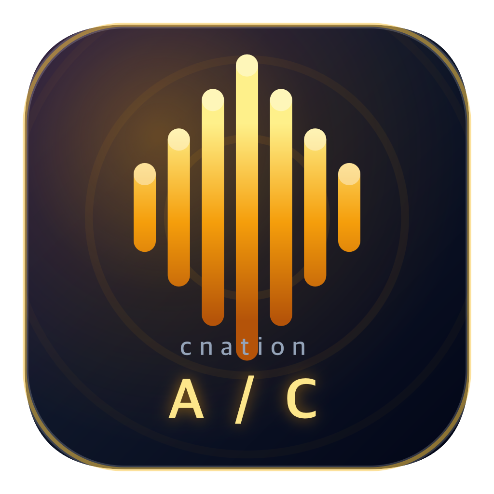

cnation
Audio Compressor
MP3 → WebM 일괄 변환 · 원본 비교 듣기
MP3 파일 추가
여러 파일을 한 번에 선택하거나 여기로 끌어다 놓으세요
WebM 음질
32k
초경량
48k
경량
64k
기본
96k
고음질
128k
최고
변환 시작
ZIP 저장
0%
파일
0
모두 지우기
추가된 파일이 없습니다
비교 듣기
일시정지
WebM
원본 MP3
WebM
0:00
0:00
번갈아 듣기
시작 위치를 정하고 구간 길이를 누르세요
3초
5초
10초